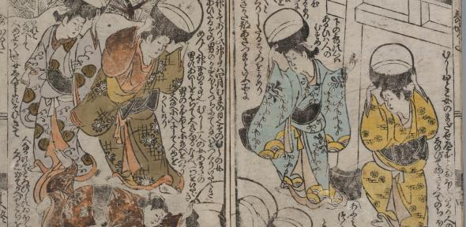

Japanese literature finds its origins in early oral traditions, which were first written down in the 8th century following the adoption of a writing system from China (Pellegrino). Among the earliest recorded texts are the Kojiki (Record of Ancient Matters, 712) and the Nihon Shoki (Chronicle of Japan, 720). Both were produced as official government projects, though their aims differ. The Kojiki is a compilation of myths, legends, and spiritual narratives, while the Nihon Shoki serves as a more structured historical account.
Another important text from this period is the Fudoki (Records of Wind and Earth), which were compiled beginning in 713 by local officials. These records describe the geography, local customs, resources, and folklore of the various provinces, offering insight into how people in different regions understood and related to the land around them (Pellegrino).
The Man'yoshu (Collection of Ten Thousand Leaves), compiled around 759, is widely considered the most impressive literary work of the era. This anthology contains over 4,500 poems written by people across all social ranks—from anonymous commoners to emperors. It also marks the rise of the tanka, a 31-syllable poetic form that would become a cornerstone of Japanese poetry.
In 905, the Kokin Wakashu (Collection of Poems from Ancient and Modern Times) became the first imperial poetry anthology. Its introduction reflected a growing appreciation for the expressive power of literature, highlighting how poetry could capture both personal emotion and collective experience (Pellegrino).
Paper Crane Pages

Classic Literature

Last Updated: April 4, 2025